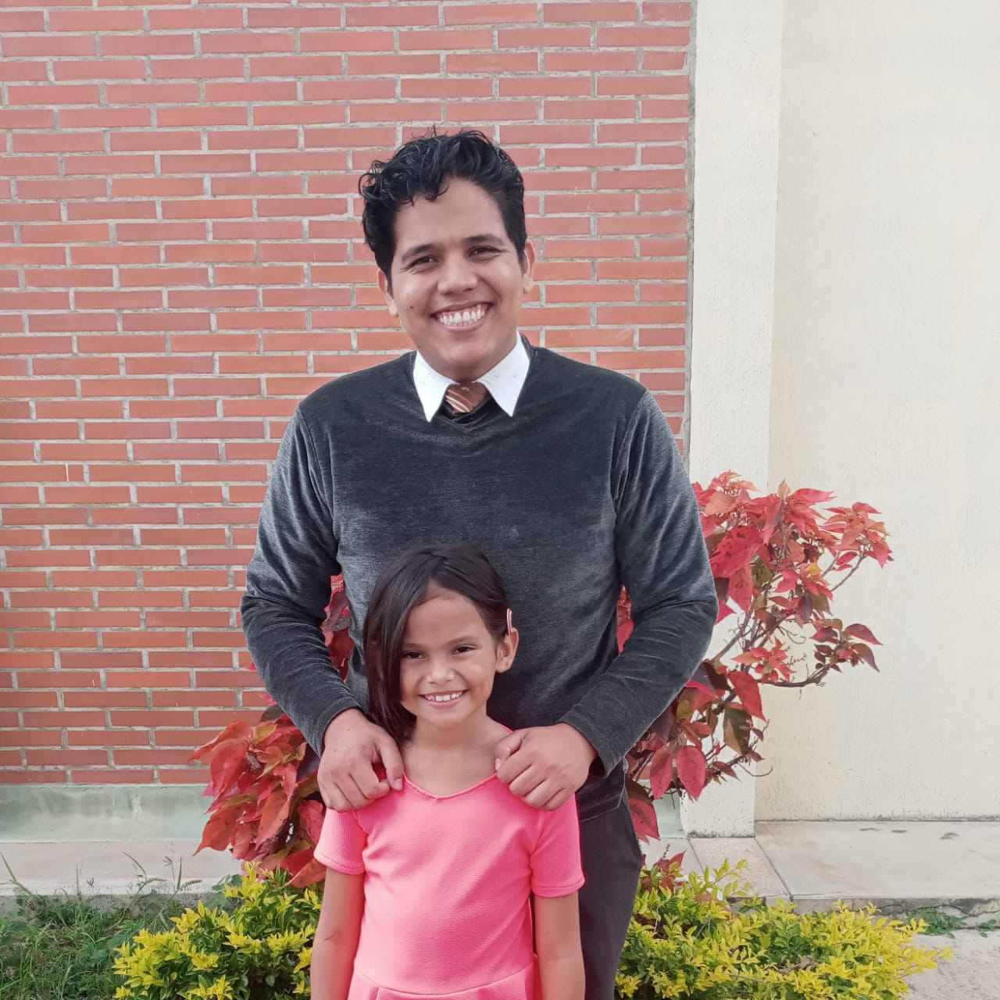

Oscar Canelon | WDD 130

Hello! My name is Oscar Canelon and I am from Venezuela. I am an online university student studying web fundamentals and technology. I enjoy computers, video games, and learning how to program. Living in Barquisimeto, I am always inspired by the vibrant culture of Lara. When I am not studying or coding, I spend my time exploring new technologies, playing video games, and looking for new challenges to improve my web development skills. My ultimate goal is to build amazing websites and grow as a professional developer. Furthermore, I am deeply interested in understanding how the internet works behind the scenes. Learning HTML and CSS is just the beginning of my journey. I plan to master JavaScript next, allowing me to create interactive and dynamic web applications that can solve real-world problems. I believe that consistent practice and dedication are the keys to mastering software development.